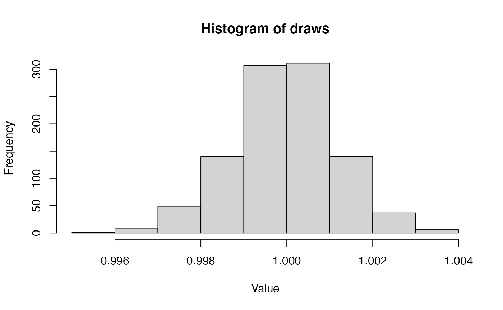

BasicTutorial.RmdRevticulate can be installed in two ways. The first is via CRAN, using the default install.packages function in R:
install.packages("Revticulate")The second is via the remotes package, a lightweight package enabling installation from GitHub repositories.
remotes::install_github("revbayes/Revticulate")The GitHub repository for Revticulate contains cutting-edge features and may contain bugfixes, but the CRAN is known to be stable for everyday use.
Upon first installation, Revticulate will run a package check.
This check searches for and .Renviron file that contains a RevBayes path. If the package doesn’t find this file, or finds it without the path, the package prompts the user to use usethis::edit_r_environ(). This opens the .Renviron file, and the user will enter rb={absolute path to revbayes}. This can be edited at any time if there are multiple installs on the system, or if you recompile RevBayes and want to use a new version.
Before using Revticulate in knitr, make sure the following is in your setup chunk:
library(Revticulate)
knitRev()RevBayes can be used in a KnitR chunk by changing the header to rb instead of r. In the below chunk, we create an object called example and use the assignment operator to give it the value 1. Then we print it.
First, load the Revticulate package and tell it where to find the RevBayes executeable.
Calling external software from R can be a bit tricky, and RevBayes is no exception. In order to successfully use RevBayes in R, you must have RevBayes installed on your computer. You must also know the system path to the RevBayes executeable. For example, on my computer, my RevBayes executeable is called “rb” (this will be the case for Mac and Linux users), and it is stored in my software folder. If you are on Windows, your copy will be called “rb.exe.”
In the above chunk, you will see the command initRev. This is a function in the RevKnitR R package. This R package can be installed using the popular devtools R package like so:
devtools::install_github("paleantology/Revticulate")The initRev function creates a RevBayes running environment, called “revEnv”, which will allow you to interact with RevBayes through R. initRev takes two arguments: path and useHistory. path is the file path to your RevBayes executable, and useHistory determines whether or not to load the RevBayes history from the last Revticulate session into the RevBayes running environment. Because useHistory defaults to FALSE, and there will be no history for the user’s first session, it is not shown in the example above. Delete my sample path and enter your path above.
The next line, knitRev establishes a KnitR environment to render Rev code in the attractive KnitR format many of us are used to.
RevBayes can be used in a KnitR chunk by changing the header to rb instead of r. In the below chunk, we create an object called example and use the assignment operator to give it the value 1. Then we print it.
example <- 1.0
example## [1] 1This is not an overtly useful thing to do, however. Let’s erase the previous chunk using the clearRev() function. This removes prior code from the RevBayes environment. Very handy if you make a mistake!
clearRev()## Successfully reset Rev History!We could, instead, choose to do something a little more useful. How about reading in a data matrix and making a quick starting tree?
morpho <- readDiscreteCharacterData("bears.nex")
num_taxa <- morpho.size()
num_branches <- 2 * num_taxa - 2
taxa <- morpho.names()
br_len_lambda ~ dnExp(0.2)
phylogeny ~ dnUniformTopologyBranchLength(taxa, branchLengthDistribution=dnExponential(br_len_lambda))
phylogeny##
## Phylogenetic tree with 18 tips and 16 internal nodes.
##
## Tip labels:
## Indarctos_punjabiensis, Ursus_thibetanus, Ballusia_elmensis, Ailurarctos_lufengensis, Ursus_maritimus, Kretzoiarctos_beatrix, ...
##
## Rooted; includes branch lengths.Anything entered in an rb block will be interpreted as Rev code, and all the normal Rev syntax will apply. For a nice overview of Rev language and syntax, please see this tutorial.
One thing researchers are often interested in doing is making an object in Rev and then viewing it in R. The best way to accomplish this is with the doRev() function. When using this function, the RevCode you’d like to run goes in the parentheses of the doRev function. These are then exportable to R. In this example, we load the dataset used in the published tutorial “Estimating a time-calibrated phylogeny of fossil and extant taxa using RevBayes” {Barido-Sottani et al. (2020)}.
doRev(input = 'morpho <- readDiscreteCharacterData("Cinctans.nex")
num_taxa <- morpho.size()
num_branches <- 2 * num_taxa - 2
taxa <- morpho.names()
br_len_lambda ~ dnExp(0.2)
phylogeny ~ dnUniformTopologyBranchLength(taxa, branchLengthDistribution=dnExponential(br_len_lambda))
phylogeny')##
## Phylogenetic tree with 27 tips and 25 internal nodes.
##
## Tip labels:
## Undatacinctus_undata, Sotocinctus_ubaghsi, Trochocystites_bohemicus, Graciacystis_ambigua, Sucocystis_bretoni, Trochocystoides_parvus, ...
##
## Rooted; includes branch lengths.The doRev function is then used to extract the object. Note that knitr chunks can only have one language type. Thus, to use a Rev Object in another chunk, it must be exported. In this case, a phylogeny is not a simple numeric type, and Revticualte automates the coercion from a string to a Newick tree that can be read by ape or similar.
phylogeny <- doRev("phylogeny")
ape::plot.phylo(phylogeny)We may choose to clear RevBayes objects out of memory so that they are not being consistently echoed to the screen.
clearRev()## Successfully reset Rev History!One nice facet of having RevBayes running in an R notebook is the ability to flip to visualizations of the different distributions we use. For example, here is the code for a common parameterization of the discrete Gamma distribution on site rates.
alpha_morpho ~ dnUniform( 0, 1E6 );
rates_morpho := fnDiscretizeGamma( alpha_morpho, alpha_morpho, 4 )
alpha_morpho## [1] 200771.6If you aren’t a big stats person, this might not mean much to you, in terms of what this distribution actually looks like. But it is important to develop intuitions for what common distributions look like and what this says about our data. So, we can use R’s built-in graphics capabilities to have a look at what 1000 draws from this gamma will look like.
doRev('alpha_morpho ~ dnUniform( 0, 1E6 );
rates_morpho := fnDiscretizeGamma( alpha_morpho, alpha_morpho, 4 )
')## [1] ""##
## Attaching package: 'ggplot2'## The following object is masked from 'package:Revticulate':
##
## %+%
alpha_value <- doRev("alpha_morpho")
alpha_value## [1] 658609.2
It’s adviseable if you’re switching gears to a new activity to clear the Rev environment of workspace objects from old activities:
clearRev()## Successfully reset Rev History!Note that clearRev is an R function, and must be executed in an R chunk.
# The number of coin flips
n <- 100
# The number of heads
x <- 50
x## [1] 50We have to start MCMC off with some initial parameter values. One way to do this is to randomly draw values of the parameter (\(p\)) from the prior distribution. We assume a flat beta prior distribution (\(\alpha = 1\) and \(\beta = 1\)).
alpha <- 1
beta <- 1
p <- rbeta (n=1, alpha, beta) [1]
p## [1] 0.7992284We next specify the likelihood function. We use the binomial probability for the likelihood function. Since the likelihood is defined only for \(p\) between 0 and 1, we return 0 if \(p\) is outside this range.
function likelihood(p) {
if(p < 0 || p > 1)
return 0
l<-dbinomial(x,p,n,log=false)
return l
}## [1] ""The function can then be executed in the next cell:
likelihood(p)## [1] 1.872887e-11The function repRev() can be called in the console (or in non-RStudio versions of R) to use RevBayes directly to program interactively. The repRev() environment is denoted with rb>>>. To exit, type Ctrl + C. It is not compatible with KnitR, being a console tool.
# repRev()
# rb>>> 1+2
# [1] 3Perhaps we would like to run a longer computation from R using Revticulate. For example, maybe we have made an MCMC script, and would like to run it using Revticulate, and then automatically process the output in R. In the below example, we will run an MCMC and automatically evaluate it for convergence using the package conveience.
Included with the package, we have a script called ‘mcmc_mk.Rev,’ which runs a short phylogenetic estimation for a small morphological dataset from bears using the Mk model {Lewis (2001)}. Once the computation is complete, convergence is diagnosed with the R package convenience {Fabreti, Höhna, and Schliep (2021)}. Please note that this will take about 5 minutes if executed.
library(convenience)
callRevFromTerminal("mcmc_mk.Rev")
checkConvergence(path = "vignettes/output/")Barido-Sottani, Joëlle, Joshua A Justison, April M Wright, Rachel CM Warnock, Walker Pett, and Tracy A Heath. 2020. “Estimating a Time-Calibrated Phylogeny of Fossil and Extant Taxa Using Revbayes.” No commercial publisher| Authors open access book.
Fabreti, Luiza, Sebastian Höhna, and Klaus Schliep. 2021. Lfabreti/Convenience: Integration with Zenodo (version zenodo). Zenodo. https://doi.org/10.5281/zenodo.5520581.
Lewis, Paul O. 2001. “A Likelihood Approach to Estimating Phylogeny from Discrete Morphological Character Data.” Systematic Biology 50 (6): 913–25. https://doi.org/10.1080/106351501753462876.